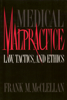

An experienced litigator lays out the essential issues
An experienced litigator lays out the essential issues


 An experienced litigator lays out the essential issues
An experienced litigator lays out the essential issues

|  |
Medical MalpracticeLaw, Tactics, and EthicsFrank M. McClellanpaper EAN: 978-1-56639-066-8 (ISBN: 1-56639-066-4) |
Philadelphia Book Clinic Certificate of Award, 1995
From practical to philosophical considerations, this succinct, clear presentation of medical malpractice issues is a valuable resource for the classroom and the reference shelf. Frank M. McClellan illustrates the multitude of considerations that impact the merit of each case, never losing sight of the importance of preserving human dignity in malpractice lawsuits.
Early chapters urge the evaluation of legal, medical, and ethical standards, especially the Standard of Care. Part II focuses on assessing and proving compensatory and punitive damages, Part III sets out guidelines for intelligence gathering, medical research, choosing expert witnesses, and preparing for trial.
Students of law, medicine, and public health, as well as lawyers and health care professionals, will find in Medical Malpractice a valuable text or reference book. "Problems" in twelve of the thirteen chapters illustrate the range of issues that can arise in malpractice suits. An appendix lists leading cases that have shaped medical malpractice law.
Preface
Acknowledgments
Part I: Legal, Medical, and Ethical Standards
1. Threshold Considerations: When Doctors and Patients Collide
2. The Lawyer's Duty of Care
3. The Common Law of Medical Malpractice
4. Discovering and Proving the Standard of Care in a World of Specialization
5. Economics, Ethics, and the Standard of Care: Emerging Issues
6. Tort Reform: Legislation, Courts, and State Constitutions
Part II: Assessing and Proving Damages
7. Assessing and Proving Compensatory Damages
8. Punitive Damages: Goals and Standards
Part III: Gathering Evidence and Developing Strategies
9. Obtaining and Reviewing Medical Records
10. Choosing and Using an Effective Expert Witness
11. Special Problems Related to Therapeutic Drug-Induced Injuries
12. Multiple Parties: Issues, Concerns, and Strategies
13. Preparing for Trial: Integrating Law and Medicine
Appendix
Notes
Suggested Readings in Case Law
General Index
Index of Cases
Frank M. McClellan is a litigator and law professor at the Temple University School of Law.
Law and Criminology
Health and Health Policy
© 2015 Temple University. All Rights Reserved. This page: http://www.temple.edu/tempress/titles/908_reg.html.